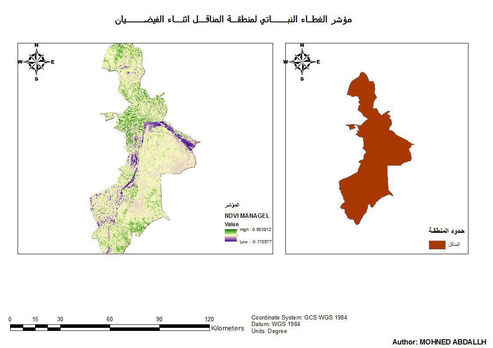

GIS Specialist | Surveying Engineer | Riyadh, Saudi Arabia
Email: mohnedabdllh@gmail.com | Phone: +966569849279
Generated NDVI maps to assess vegetation conditions using satellite imagery and ArcGIS tools during the flood season.
Built an interactive GIS-based dashboard to monitor and visualize COVID-19 case data across Sudan using Excel and ArcGIS Online.
GIS-based network analysis to assess and optimize routes using ArcGIS Network Analyst.